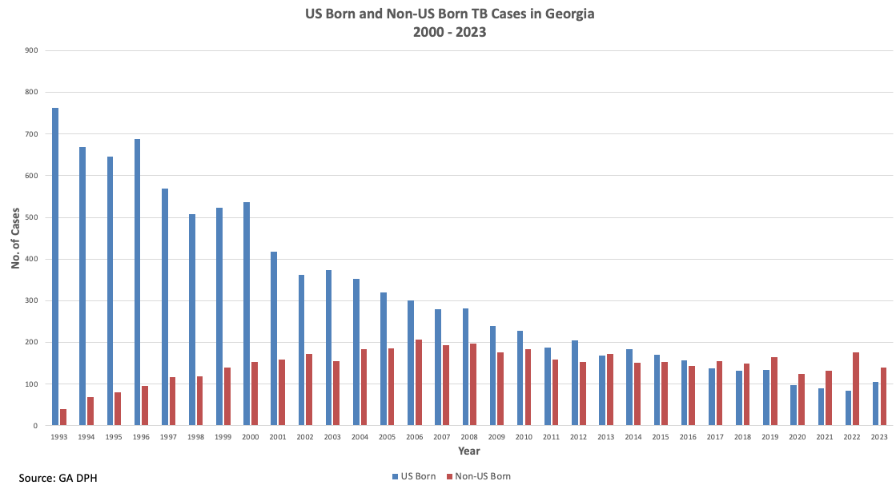

Worldwide, TB is an enormous global public health problem. The World Health Organization (WHO) estimates that there were 10.8 million new cases of active TB disease and more than 1.25 million deaths due to TB in 2023.
Tuberculosis (TB) is again the leading cause of death due to an infectious disease globally. TB had been the leading cause of death in 2019 prior to the COVID-19 pandemic. COVID-19 emerged globally as the leading cause of death due to a single infectious disease, but the number of COVID-19 related deaths have decreased, and TB re-emerged as the leading cause of death due to an infectious disease in 2023. TB remains the leading cause of death in persons with Human Immunodeficiency Virus (HIV) infection.
Approximately one-fourth of the world’s population is estimated to be infected with Mycobacterium tuberculosis (i.e., have latent TB infection [LTBI]) and therefore potentially at risk for developing active TB disease.
In the U.S., there was a resurgence of TB from 1985 to 1992. The number of cases increased 20% during this time period, peaking in 1992 with 26,673 cases reported. The increased case numbers were attributed to the HIV epidemic, decreased funding for public health, immigration from countries where TB is endemic, and transmission of TB in congregate settings such as hospitals, correctional institutions, and homeless shelters.
 Source: CDC
Source: CDC
Due to a number of public health interventions, TB cases began declining in 1992 in the U.S. Between 1992 and 2020, there was a 74% decrease in the number of cases, as TB control and prevention was strengthened nationally. The number of TB cases in the U.S. declined considerably in 2020 to 7,171, coinciding with the COVID-19 pandemic. However, TB case counts and incidence rates increased in 2021-2024.
In 2024, 10,347 TB cases were provisionally reported by CDC in the US with a corresponding rate of 3.0 cases per 100,000 population. In 2023, the CDC reported 9,633 cases of active TB disease in the U.S. and an incidence rate of 2.9 cases per 100,000 persons. The incidence rate in 2022 was2.5 per 100,000). The TB case count in 2024 in the U.S. is the highest reported since 2013, and the incidence rate is the highest since 2016.
 Source: CDC
Source: CDC
TB is not evenly distributed among the U.S. population. Recovery from pandemic-related health care disruptions, increases in post-pandemic travel and migration, and outbreaks in several states have likely contributed to recent TB trends. Cases occur disproportionately in urban areas, in conditions of poverty, undernutrition, over-crowding, and among racial and ethnic minorities and non-US-born persons.
In 2024, 76% of US TB cases occurred among Non-US Born persons. In 2023, 776% of the U.S. TB cases occurred among non-US born persons.
 Data on US Born and Non-US Born cases unavailable in the State of Georgia for 2024.In 2023 in the state of Georgia, 57% of TB cases occurred among non-US born persons in 2023
The average lifetime risk of developing active TB following TB infection, if no treatment of latent TB infection (LTBI) is received, is approximately 5%. The greatest risk of progression to active TB disease is within the first two years following infection with M. tuberculosis. UNAIDS estimates that persons infected with both M. tuberculosis and HIV are 30 to 50 times more likely to develop active TB disease than those infected with M. tuberculosis but who do not have HIV infection. The risk of progression to active TB disease among people living with untreated HIV who have LTBI is up to 10% per year.
Drug-resistant TB is a major challenge to global TB prevention and control efforts and historically associated with a higher morbidity and mortality compared to drug-susceptible disease. Multidrug (MDR) TB is defined as resistance to at least isoniazid (INH) and rifampin (RIF). Extensively drug resistant (XDR)-TB is defined as MDR-TB plus resistance to a fluoroquinolone (FQN) drug and either bedaquiline or levofloxacin. There have been significant improvements (more potent regimens given over shorter periods of time) in the past several years for the treatment of highly drug resistant TB include use of the BPaL (bedaquiline, protamanid, levofloxacin) and BPaLM (BPaL plus moxifloxacin) regimens which require 6-9 months of therapy.
Every culture-positive TB case for which an isolate is submitted to the state health department is subjected to whole-genome sequencing (WGS) through CDC. WGS data is used to identify and confirm recent transmission and supplement contact investigations done by the state and local health departments.
The State of Georgia had TB rates higher than the U.S. average for several decades, but rates have decreased significantly over the past decade, and currently Georgia has a TB incidence rate below the U.S. national average. In 2024, Georgia provisionally reported 253 new TB cases, compared to 246 in 2023. In 2023, Georgia had an incidence of 2.2 TB cases per 100,000 population which was below the US TB incidence of 2.9 cases per 100,000. Of the culture-confirmed TB cases tested for drug susceptibility in Georgia in 2023, 7.4% had resistance to INH, and only 2 cases were MDR.
 More than half of TB cases in Georgia occur in the metropolitan Atlanta area.
More than half of TB cases in Georgia occur in the metropolitan Atlanta area.